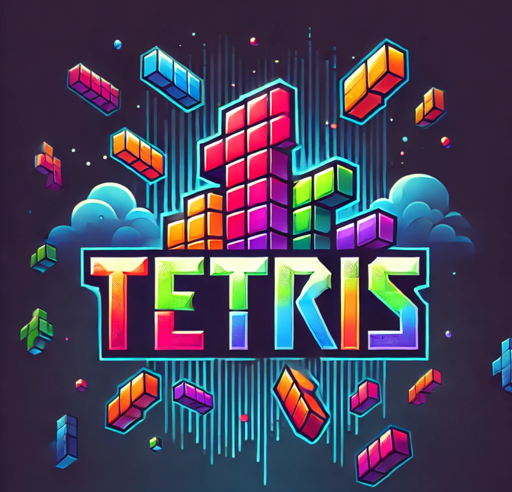

JUAN ABEL HUAMAN
root@dev:~$
SYSTEM.INFO
Desarrollador full-stack especializado en arquitecturas escalables y soluciones empresariales. Dominio profundo de Node.js, PHP, C# y SQL. Experto en integración con SAP Business One (DI-API / HANA).
> LOAD_MODULES:
Node.js
PHP
JavaScript
C#
MySQL
Firebase
> EXECUTE_PROJECTS
[ API SUNAT & T.C. ]
API REST (Node.js/Express) para consulta de RUC, DNI y Tipo de Cambio. Integración de Web Scraping (Puppeteer) y Firebase.
INITIALIZE
[ ARCADE_TETRIS ]
Juego arcade con renderizado HTML5 Canvas, sistema de ranking global en tiempo real (Firestore) y físicas personalizadas.
PLAY_NOW[ SECURE_CHAT ]
Plataforma de comunicación en tiempo real desarrollada con React y WebSockets. Encriptación end-to-end.
OFFLINE